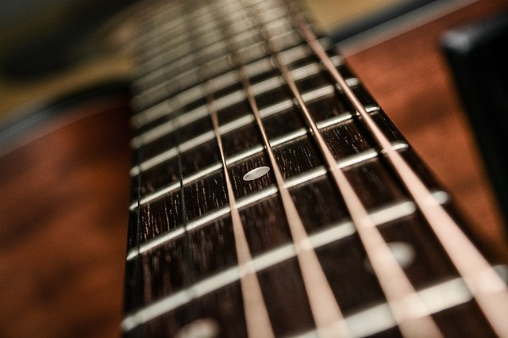

About Musicland
Musicland is a small, family run music school in rural County Galway. It was set up by ...... in....... The school's primary focus is teaching children classical music in an enjoyable and interesting way. The school works with young people from all over Galway and beyond. As a small school, Musicland provides music tuition closely linked to the needs of each child. " The school is going from strength to strength and is planning to increase its teaching staff to deal with the new demand. "We specialize in classical musical tuition. As we all know, learning classical music at an early age provides children with the essential tools to become accomplished musicians in any style they choose." The school is open six days a week and caters for the needs of a multitude of children learning various instruments from piano to oboe. At Musicland, we believe in the innate ability and musical potential of every child who walks through our doors. our mission is to make learning music as enjoyable as possible. Our classes are structured in a friendly and open manner. We pride ourselves on our tutors who teach in a dynamic and fun style.
Classes at Musicland
Musicland provides classes across a range of musical instruments to children as young as four up to about twelve. Classes are run in the evenings and on Saturdays. Wind instruments are particularly popular and due to popular demand, we plan to hire a part-time clarinet tutor for Saturday classes. Most instruments can be catered for and we have just hired a specialist percussion teacher. Hopefully students won't keep the neighbours up all night! If you have children who are interested in enrolling drop by the school any day of the week and we will give you a tour of the building. We may even put on an impromptuo concert while you are here!